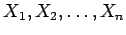
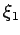
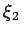

Inhalt Index DeskTop Bronstein

 Algebra und Diskrete Mathematik Fuzzy-Logik Wissensbasierte Fuzzy-Systeme
Algebra und Diskrete Mathematik Fuzzy-Logik Wissensbasierte Fuzzy-Systeme


Zur Erläuterung der Methode soll das bekannte Beispiel der Regelung eines, auf einer beweglichen Unterlage aufrechtstehenden Pendels (Pendel auf beweglicher Unterlage) mit dem MAMDANI-Regelungskonzept behandelt werden.
Ziel der Regelung ist es, das Pendel so in der Balance zu halten, daß der Pendelstab vertikal steht, d.h. die Winkelabweichung vom Lot und die Winkelgeschwindigkeit zu Null werden. Das kann durch die Kraft F, die Stellgröße, die auf das untere Ende des Pendels einwirkt, erreicht werden. Dazu wird das Modell eines menschlichen ,,Kontrollexperten``(kognitive Aufgabe) zugrunde gelegt. Der Experte formuliert sein Wissen in Form linguistischer Regeln. Linguistische Regeln bestehen im allgemeinen aus einer Prämisse, d.h. einer Spezifikation der Werte für die Meßgrößen, und einer Konklusion, die einen geeigneten Stellwert angibt.
Für jede der Wertemengen  für die Meßgrößen und Y für die Stellgröße sind geeignete linguistische Terme wie ,,ungefähr Null``, ,,positiv klein`` usw. festzulegen. Dabei kann ,,ungefähr Null`` bezüglich der Meßgröße  durchaus eine andere Bedeutung besitzen als für die Meßgröße .